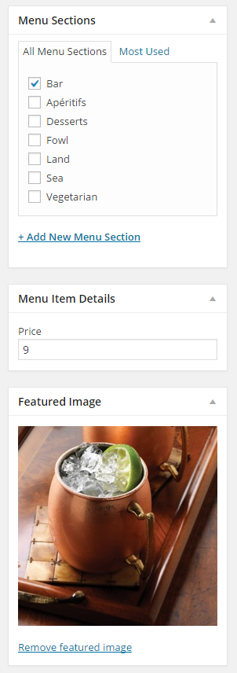
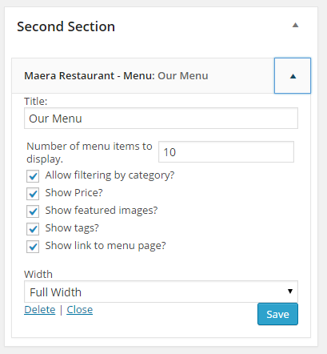
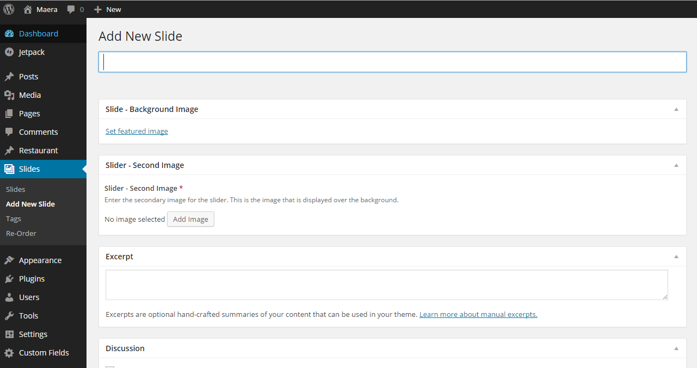
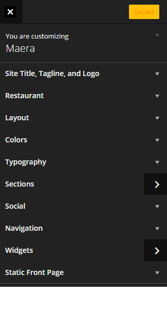
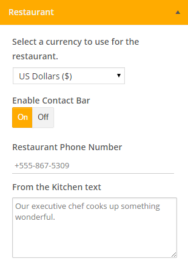
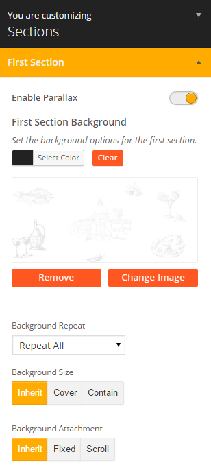
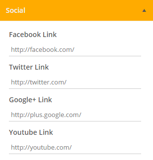

Introduction
Welcome to the Maera Restuarant documentation. We will help you understand how the shell works, what plugins will be required, how to build your front page, and how to use the restaurant functionality.
Shell Logic
Maera Restaurant uses five, front-page, widgetized sections that allow you to build in your content how you see fit. What makes this exceptional, is that when coupled with the Maera widget class, you can specify how much area is used by your widgets. You can then build in content as you like. We have included a fallback to include the latest posts on the front page in case you haven’t added any widgets yet.
Maera Restaurant comes with two brand new widgets; the new slider widget, built using Timber/Twig, and with its own custom post type, and also the menu widget. This is not to be confused with navigation menus, but rather food menu (items).
Restaurant
Restaurant Plugin
The Maera Restaurant Shell requires the WordPress Restaurant plugin by Justin Tadlock. Using this as the core, we can quickly and easily extend it to allow for an array of extra functionality which is included in the Maera Restaurant shell. By default, you can specify menu item tags, such as if an item is gluten free, a chef’s special, etc. With Maera Restaurant, we have added in additional fields which allow you to specify the menu item section, such as Dessert, Main Courses, or Appetizers.
How to use the Restaurant Plugin
Restaurant > Add Menu Item
Create a new menu item using the standard WordPress post interface.

Enter a title for your menu item, as well as a description. Since food item descriptions tend to run on the shoter side, it is probably wholly uneccessary to use the post excerpt. However, you may do so if you desire. Also, if your description runs long, Maera Restaurant will handle the excerpt for you automatically.
Enter a price, menu section (required/recommended), menu tags (if desired), and an image to use for the image, (if desired/recommended).

Once you have entered the information, save your post and it will then be ready for display in the restaurant menu.
Food Menu Widget
Options and Use
The Maera Restaurant - Menu widget will display your restaurant’s menu wherever you desire. We have kept the options simple and straightforward. To use the widget add the Maera Restaurant - Menu widget using the standard WordPress widget interface.
Enter a title for your menu.
Select how many menu items to display in the widget.
Specify whether or not to allow the user to filter items, show price, images, menu tags, and a link to the full menu page.
Specify the width of the widget. The width of the widget uses Bootstrap 3 logic, with a custom full-width option.

For example, if you would like the widget to take up 1/3 of the space it is in, set the widget width to 4/12. If you would like the widget to take up half the space it is in, set the widget width to 6/12. If you would like the widget to take up the full space it is in, set it to 12/12. Additionally, if you would like the widget to stretch past its boundaries and take up the full window width, specify Full Width.
Save your options and your menu is now on display.
Slider Widget
The Maera Slider widget will allow you to add as many slides as you like, and place them wherever desired. The slider uses its own custom post type coupled with Advanced Custom Fields to allow for multiple images and text within the slider.
The slider also uses CSS3 animations, which keeps the codebase much lighter.
How to use the slider Widget
Slides > Add New Slide
Create a new slider post using the standard WordPress post interface. 
Add an image to use for the background of the slider.
Add a second image to use for the overlay. If you do not select an image to use, the slider title and text will span the full width instead.
Add a title for the slide to use for the main text, and add an excerpt to use for the secondary text of the slider.
Add the slider widget using the standard WordPress widget interface.
Set the options for the slider widget such as how many slides to display, whether or not to offset, the interval at which the slides cycle, pause on mouse hover, continuous cycle, parallax, or enabling/disabling the overlay image.

Front Page Sections
How To Use
The front page is laid out with 5 different sections in which you can build your content. Each section is a widgetized area that supports action filters for injecting content both before and after the content. This allows developers to greatly expand the front page content.
{% do action( 'maera/restaurant/before_section_1' ) %}
{% include 'section_1.twig' %}
{% do action( 'maera/restaurant/after_section_1' ) %}
<?php
function my_custom_action() {
include_once( dirname( __FILE__ ) . '/includes/my-file.php' );
}
add_action( 'maera/restaurant/before_section_1', 'my_custom_action' );
?>
Customization
To customize Maera - Restaurant, just visit Appearance > Customize in the WordPress admin area. 
Restaurant Customization
We have added a few options that will let you change the currency type, contact information, as well as the recent blog posts text, which could help restaurants better define their branding.

Layout Customization
You can select between a wide layout, a layout to include a sidebar. The front page sections are toggleable, (on/off), and can be rearranged above or below each other. To enable a section, click the “Eye” on the left of the section to enable, then use the handles on the right to move the sections around as you please. Your changes are reflected immediately in the customizer window.
You can also enable or disable breadcrumbs should you desire.

Color Customization
You can select a few colors to use throughout the site, such as the primary brand color, link color (static and over), as well as the color of the navigation bar. We also included custom color calculations which can handle some of the color for you. When enabling automatic color calculations, any text and links are automatically generated to be a contrasting color of what the background color of the section is set to be.
Say, for example, you set Section 1 to have a dark background color (covered later), and have automatic color calculations enabled, the text displayed in section 1 will be of a contrastinc color, such as white/off-white. Link colors will also adapt. The same applies for any color set on the navigation menu.

If you enable automatic color calculations, some other color options will be disabled.
Typography Customization
The typography options allow you to set the body, header (H1, H2, H3, etc) and content font, colors, size and weights. The fonts available are from Google Fonts, and will be provided in a list for you to choose. If you need to use a brand specific font, you will need to add them to your CSS.

Section Customization
Using the Section customization options, you can create a beautiful parallax site, or even a site with very distinctive sections. You can specify a background for each section, and whether or not that parallax for the section is enabled. When enabling parallax, the background of the section is automatically specified, so you don’t have to worry about proper positioning. Just upload a high quality image that is decently sized, enable Parallax and you’re set. You can even combine this semi-transparent PNG’s and background colors, allowing for more granular parllax control.

Social Customization
You can specify your Facebook, Twitter, Google+ and YouTube account links, and they will be displayed in the contact bar, and/or the Maera Restaurant - Social Widget,
